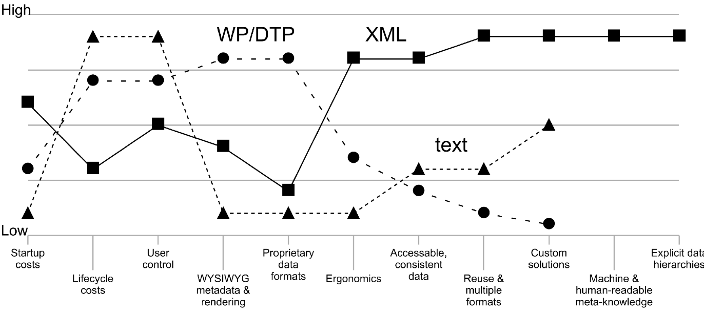

<vcanvas/>
— Visualizing and comparing sets of value optimizationsValue canvases come from the book Blue Ocean Strategy, They provide a good way to visualize and compare multiple sets of value propositions. The following SVG rendering was generated from data entered into a <vcanvas/> table.
Figure 32. Rendering of <vcanvas/> datasets
